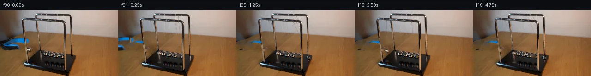

![首帧]()

Round 00
2026-11-05T17:36:08.197382+00:00像素候选变化代码 +317/−0inspection 更新
pixels dd03c117537adcbc · code b1c7fe01cef69256
查看本轮 generate.py 真实 diff
--- previous/generate.py
+++ current/generate.py
@@ -0,0 +1,317 @@
+"""Local photographic pixel continuation; no external renderer or model."""
+from pathlib import Path
+import json
+import math
+import numpy as np
+from PIL import Image, ImageDraw
+import cv2
+from scipy.integrate import solve_ivp
+from scipy.ndimage import gaussian_filter
+from artifact_io import save
+
+ROOT = Path(__file__).resolve().parent
+W, H = 256, 144
+SOURCE = np.asarray(Image.open(ROOT / 'first_frame.png').convert('RGB'))
+Y, X = np.mgrid[:H, :W].astype(np.float32)
+REST = np.array([[89.3, 94.3], [99.7, 96.2], [110.1, 98.1],
+ [120.5, 100.0], [130.9, 101.9]])
+RADIUS = 4.85
+ARM_PIXELS = 75.0
+SLOPE = 1.9 / 10.4
+ANGLE = math.asin((89.3 - 63.0) / ARM_PIXELS)
+VERTICAL_PROJECTION = (94.3 - 87.0 - SLOPE * 26.3) / (ARM_PIXELS * (1 - math.cos(ANGLE)))
+G, LENGTH_M, RESTITUTION = 9.81, 0.183, 0.987
+FPS, EXPOSURE = 4, 1 / 120
+
+
+def polygon(points, smooth=False):
+ scale = 4 if smooth else 1
+ im = Image.new('L', (W * scale, H * scale))
+ ImageDraw.Draw(im).polygon([(int(x*scale), int(y*scale)) for x, y in points], fill=255)
+ if smooth:
+ im = im.resize((W, H), Image.Resampling.LANCZOS)
+ return np.asarray(im).astype(np.float32) / 255
+
+
+def ellipse(cx, cy, rx, ry, softness=0.65):
+ dist = np.sqrt(((X - cx) / rx)**2 + ((Y - cy) / ry)**2)
+ return np.clip((1 - dist) * min(rx, ry) / softness + 0.5, 0, 1)
+
+
+def stroke(a, b, width=1):
+ # Analytic fractional coverage for a subpixel string; rounded endpoints.
+ ax, ay = a; bx, by = b
+ vx, vy = bx-ax, by-ay
+ u = np.clip(((X-ax)*vx + (Y-ay)*vy)/(vx*vx+vy*vy+1e-8), 0, 1)
+ d = np.sqrt((X-ax-u*vx)**2+(Y-ay-u*vy)**2)
+ return np.clip(width/2+0.55-d, 0, 1)
+
+
+def composite(canvas, color, alpha):
+ alpha = np.asarray(alpha)[..., None]
+ return canvas * (1-alpha) + np.asarray(color) * alpha
+
+
+# Build the grabber silhouette from the photograph. Open gap remains transparent.
+upper_poly = [(0,69),(10,65),(21,63),(35,60),(52,61),(62,63),
+ (66,69),(62,73),(55,73),(54,68),(38,68),(23,73),(8,77),(0,77)]
+lower_poly = [(0,72),(9,73),(26,72),(36,73),(43,78),(43,84),
+ (34,87),(15,87),(3,84),(0,81)]
+upper_mask = polygon(upper_poly, True)
+lower_mask = polygon(lower_poly, True)
+tool_mask = np.maximum(upper_mask, lower_mask)
+
+# Locally revealed wood under the departing tool: same-height clean tabletop
+# texture from x=65..77 and x=9..48 below the tool, with a smooth color gradient.
+# Inpainting fills only the tool area, first using genuine nearby photograph pixels.
+mask8 = (tool_mask > 0.02).astype(np.uint8) * 255
+clean_tool = cv2.inpaint(SOURCE, mask8, 4, cv2.INPAINT_TELEA).astype(np.float32)
+# Large low-texture gaps are supplied with row-aligned local wood grain, not flat fill.
+for y in range(61,89):
+ for x in range(0,68):
+ if tool_mask[y,x] < 0.1:
+ continue
+ donor_y = 94 + ((y-61) % 12)
+ donor_x = 8 + ((x*3 + y//4) % 39)
+ donor = SOURCE[donor_y, donor_x].astype(float)
+ ratio = 0.79 + 0.12*(x/68) + 0.03*(y-61)/28
+ texture = donor * ratio
+ mix = 0.65 * min(1, float(tool_mask[y,x]))
+ clean_tool[y,x] = clean_tool[y,x]*(1-mix)+texture*mix
+clean_tool = composite(SOURCE.astype(float), clean_tool, tool_mask)
+
+# Restore the front-left post where the tool passed in front of it, using
+# source chrome cross sections shifted along the post's measured slope.
+for y in range(61,79):
+ donor_y = 41 + ((y-61) % 15)
+ center = 49.3 + 0.066*y
… diff truncated; 230 more lines …